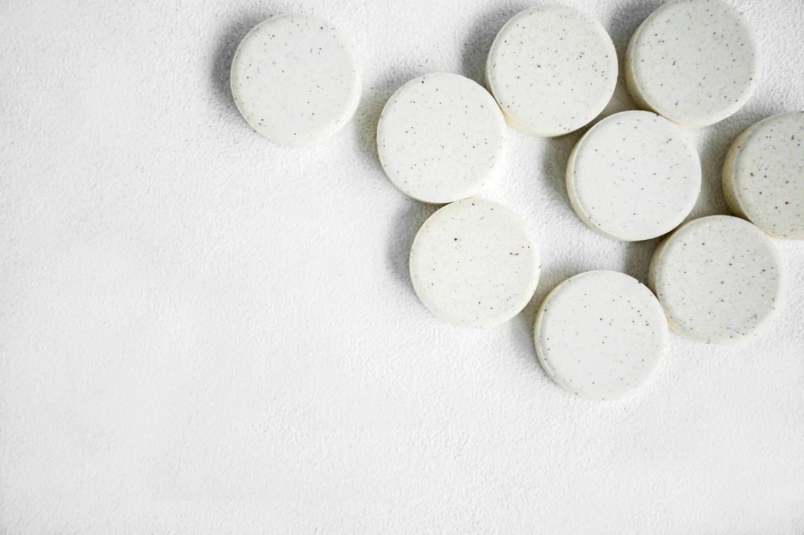
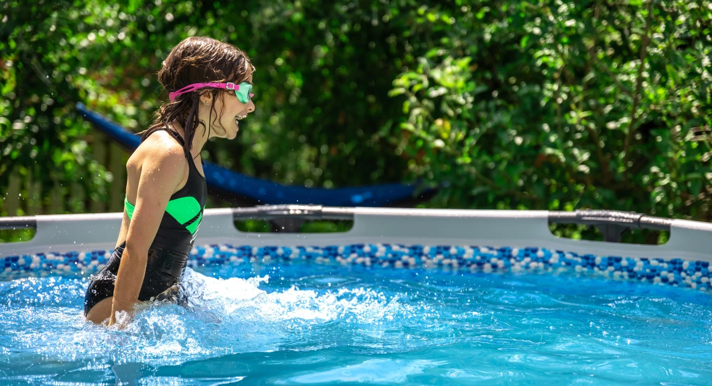
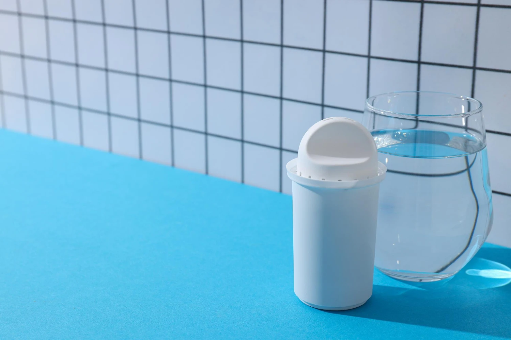
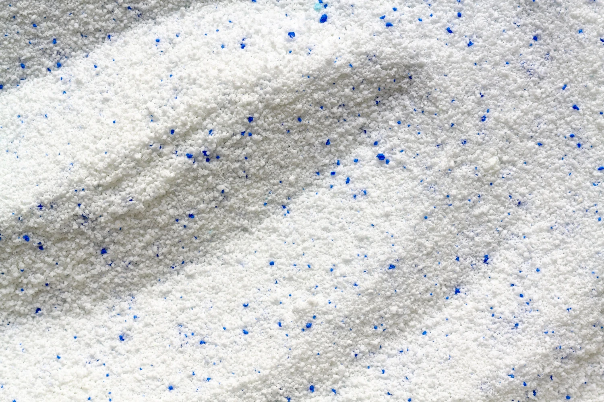
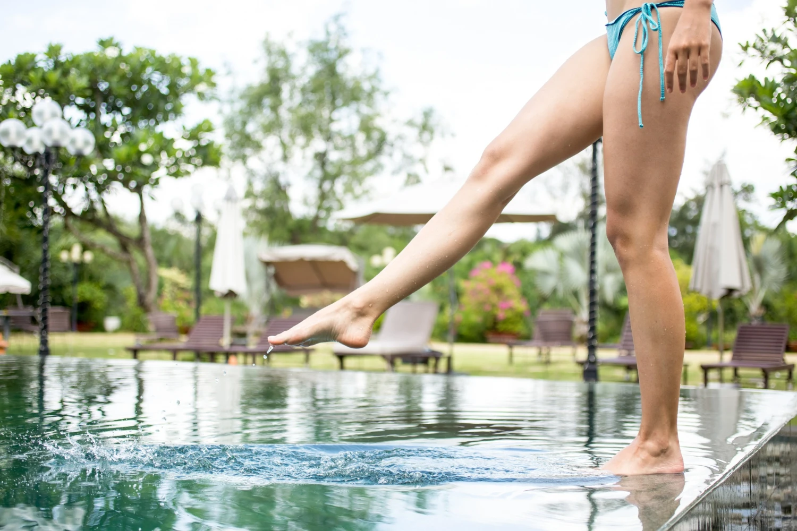
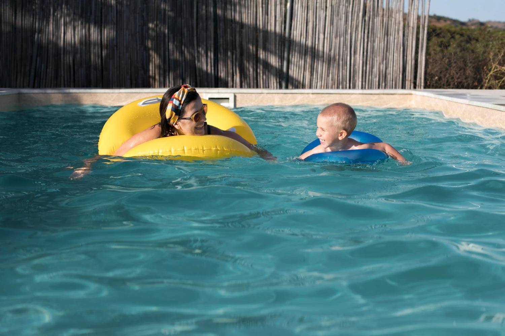
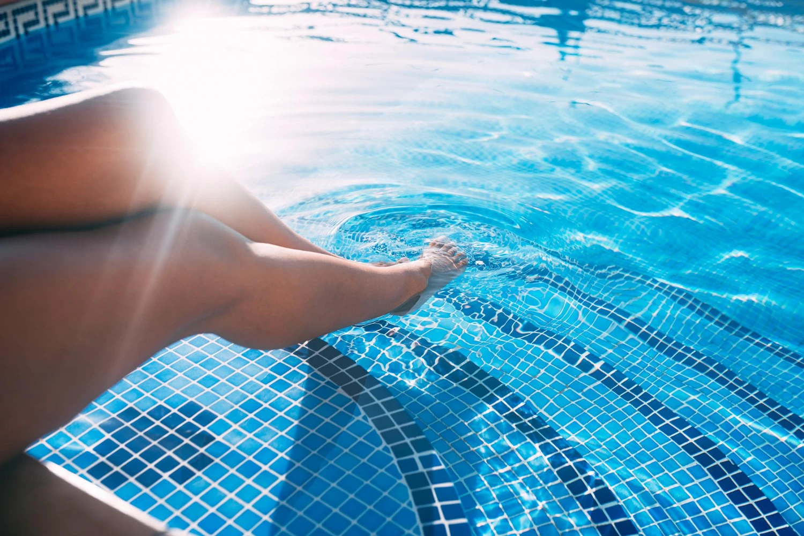

GuíasDosificador de Cloro para Piscinas
Tipos, comparativa y cómo elegir el mejor dosificador de cloro según el tamaño y uso de tu piscina.
Leer MásGuías, comparativas, tips y novedades para que tu piscina esté impecable los 365 días del año.

GuíasTipos, comparativa y cómo elegir el mejor dosificador de cloro según el tamaño y uso de tu piscina.
Leer Más
TipsCuánto cloro aplicar según tamaño, temperatura y uso. Cantidades exactas en tabletas, granulado y líquido.
Leer MásLa forma más simple y económica de dosificar cloro. Cómo elegirlos, usarlos y la tabla de dosificación.
Leer Más
GuíasCómo funciona, tipos disponibles y por qué tu piscina lo necesita para una dosificación correcta.
Leer Más
GuíasCuándo aplicarlo, cómo dosificarlo y por qué es el mejor para tratamientos shock y recuperación.
Leer MásCómo usarlas, dónde ponerlas, cuánto duran y cuáles son las mejores para piscina residencial.
Leer MásGuía completa de tipos, formatos y cómo elegir el mejor cloro para tu piscina residencial.
Leer Más
GuíasCloración constante, pH balanceado, algicida preventivo y cepillado semanal: la rutina anti-algas que evita tratamientos de emergencia.
Leer MásGuía paso a paso para dejar la piscina lista para el invierno sin perder agua ni dañar la estructura.
Leer MásVaciar, no clorar, la lluvia limpia… Desmontamos los mitos que cada año hacen perder plata a los dueños de piscina.
Leer MásDescubre la rutina semanal de cloración, filtrado y pH que los profesionales usan para que el agua nunca se enturbie.
Leer Más
ComparativaTe explicamos las ventajas, desventajas y costos reales de cada formato para que escojas el adecuado para tu piscina.
Leer Más
TipsCuántas tabletas usar según el volumen de tu piscina, cada cuánto reponerlas y cómo evitar sobre o subdosificar.
Leer MásEncuentra todo lo que necesitas en un solo lugar: cloro en tabletas, kits completos, accesorios y tratamientos profesionales.
Comprar Productos